01
GPU 感知调度
按 FIFO 管理训练队列，支持指定单卡、多卡 DDP、任意空闲卡与 CPU 回退；设备释放后自动唤醒可运行任务。
- 显存占用感知与设备可用性提示
- 训练任务与模型测试分开抢占资源
Local · Multi-user · YOLO11
把目标检测研发的每一步，收进一个工作台。 平台面向本机与内网服务器部署，覆盖数据标注、GPU 调度、训练分析、知识库问答、 工具调用及 ONNX / 昇腾 OM 交付；所涉及模型均为本地部署。
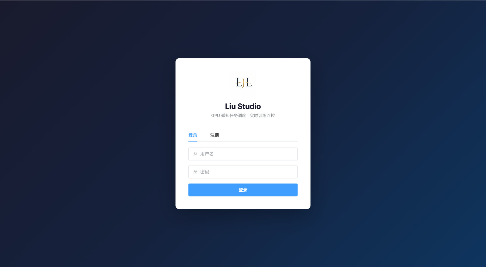
Why Liu Studio
平台围绕算法研发中的真实断点设计：数据散落、GPU 冲突、训练过程不可见、结果复盘耗时， 以及模型从实验走向业务验证时的重复操作。
按 FIFO 管理训练队列，支持指定单卡、多卡 DDP、任意空闲卡与 CPU 回退；设备释放后自动唤醒可运行任务。
每轮训练完成后，由多模态大模型读取关键指标与图表，生成新超参并创建下一轮任务，直至达到设定轮数。
逐行解析 Ultralytics 日志，通过 WebSocket 推送 Loss、Precision、Recall 与 mAP，训练状态与关键事件同步更新。
Agent「乐悠」不只回答问题，还能查询模型和数据、执行图片检测、导出 ONNX，以及在已配置环境中转换并测试昇腾 OM。
One Continuous Workflow
点击流程节点，查看每个阶段在平台中的具体操作与衔接方式。
数据标注 · 数据管理
在 Konva 画布中完成矩形框标注、类别维护、撤销重做与自动保存；导出 train / val、YOLO 标签和 data.yaml 后， 通过本地目录或 YAML 注册数据集并校验路径与类别。
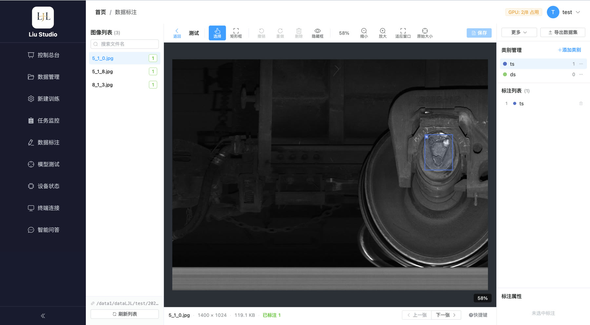
LLM in the Loop
打开 Agent 智能调参并设定最大轮数后，平台会串联训练、分析、调参和重新排队。 每轮保留独立编号、指标和结果，任务监控中可展开整组实验，直接比较每一轮表现。
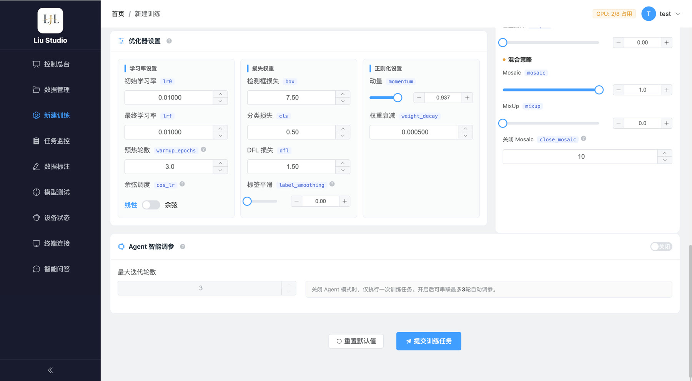
Three Intelligence Modes
智能问答把模型对话、专业分析、知识库检索与平台工具放在同一会话中。 通过开关选择工作模式，历史上下文可持续追问。
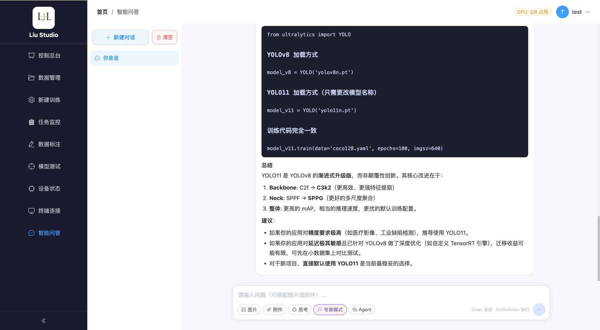
支持思考与专家模式，可上传图片及常见文档，适合解释训练参数、诊断指标、阅读材料和持续追问。
源码将生成、向量召回和结果重排拆成三项独立服务，全部通过本机或内网接口协同工作。
/embed 服务生成查询和知识块向量，与 BM25、编码硬通道共同完成候选召回。故障库 + 平台手册共用/rerank 服务Complete Product Surface
每个模块都围绕实际工作流设计。点击任意截图可查看完整界面。
汇总顶层任务数量、训练/等待/完成状态、每张 GPU 的空闲或占用情况以及最近任务。Agent 多轮任务按组统计，快速判断当前资源与实验进度。
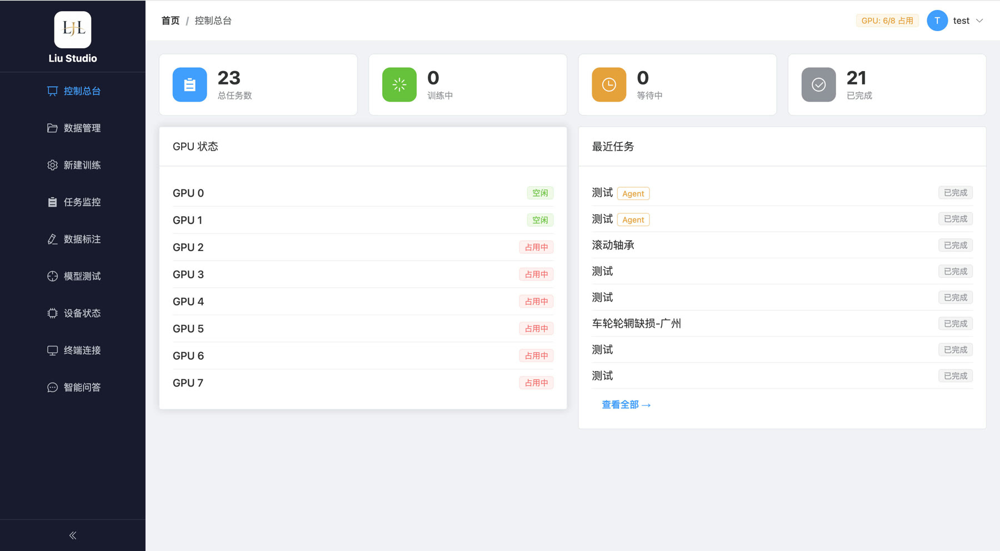
通过服务器本地目录或 YAML 注册数据集，校验 train / val 路径、推断类别并生成训练所需配置；可随磁盘内容同步样本数量。
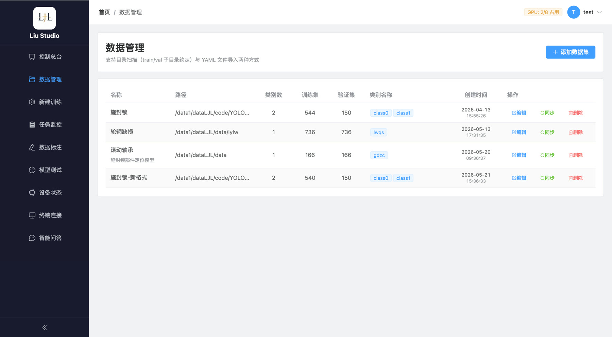
选择数据集、预训练权重、Conda 环境与 GPU，配置基础训练、优化器、损失权重和数据增强；可切换普通训练或 Agent 多轮调参。
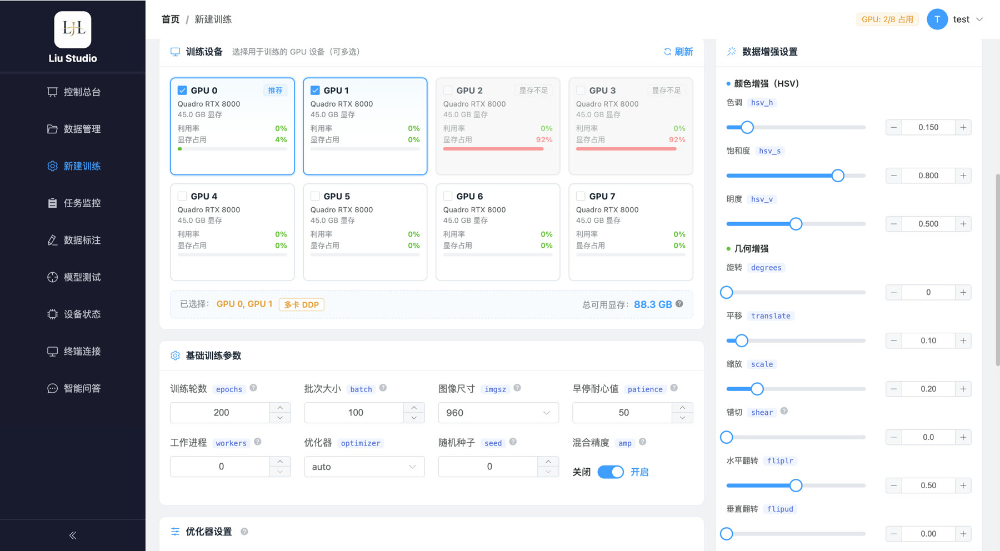
按状态筛选所有任务，支持取消、删除和进入详情；Agent 组可展开查看每一轮。详情页通过 WebSocket 实时展示 Loss、P / R / mAP 曲线、epoch 进度、日志与 Agent 事件。
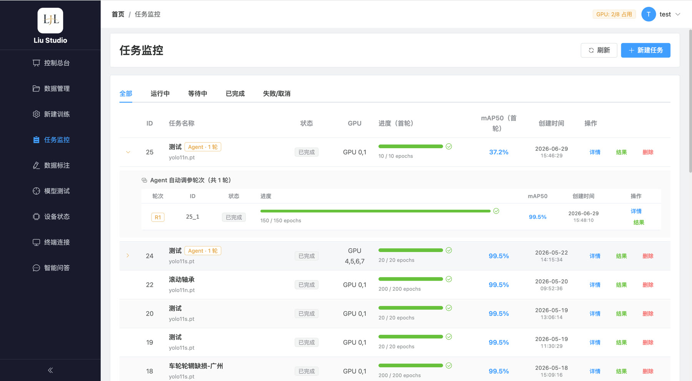
集中查看最终指标、权重文件、混淆矩阵、PR / F1 曲线和训练事件；支持下载 best.pt、导出结构化训练报告，并流式生成多模态 AI 分析报告。
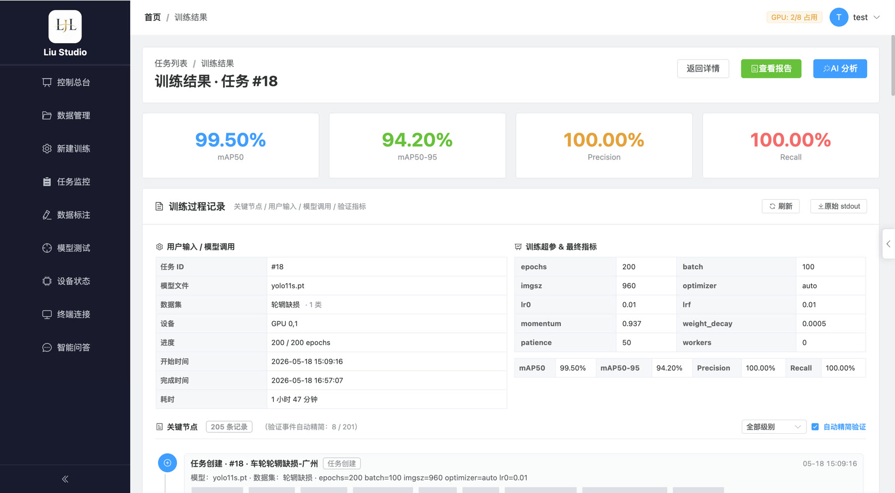
图片列表、Konva 标注画布、类别与框属性三栏协作；支持缩放平移、快捷键、撤销重做、延时自动保存，并导出标准 YOLO 训练集。
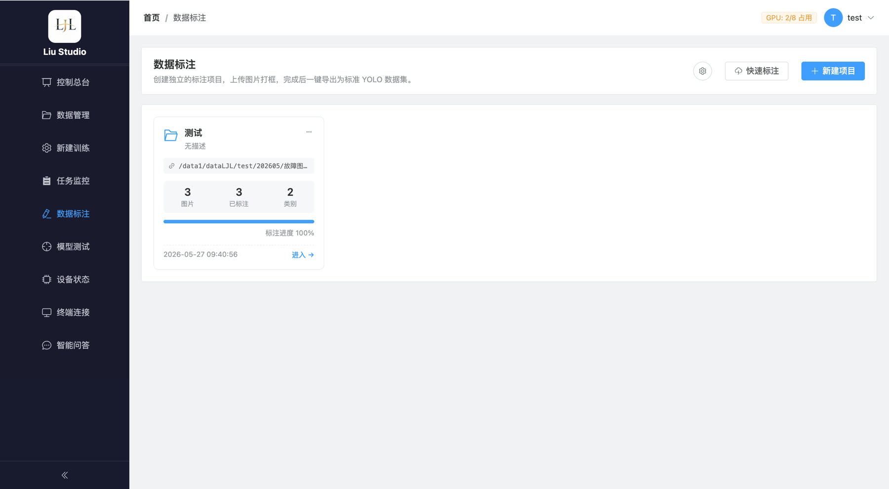
从已训练权重、自定义权重或预置模型中选择测试模型，接入数据集、目录、上传文件或标注项目做批量推理；支持逐图纠正、背景标记与多格式结果导出。
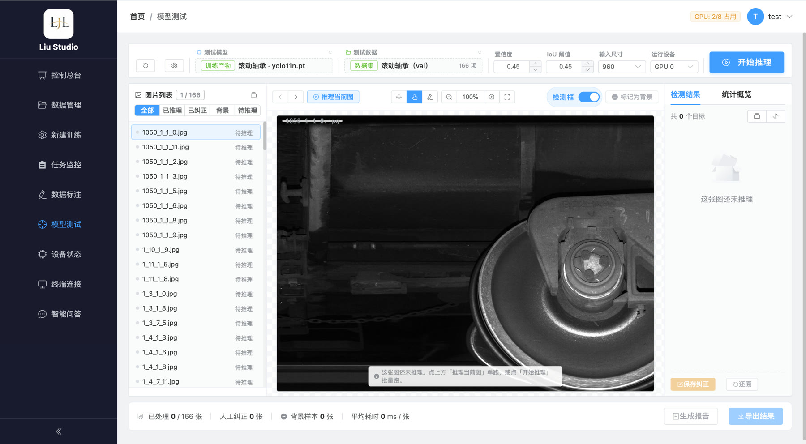
约每两秒更新 CPU、内存、GPU 利用率、显存与温度，并保留简要趋势曲线；提交大任务前可先确认机器负载与可用设备。
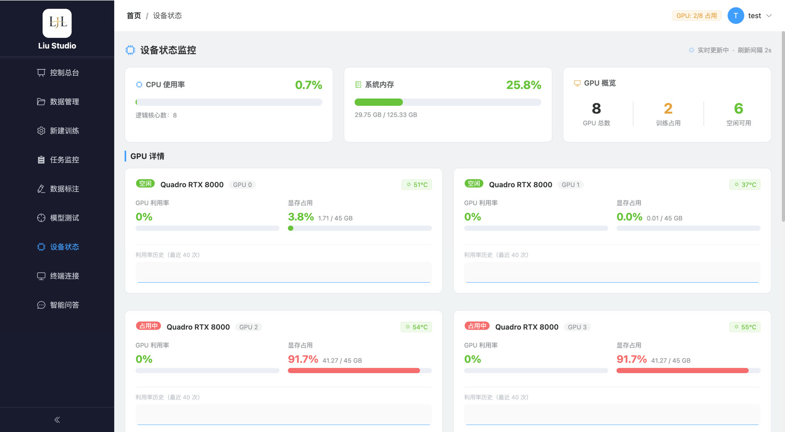
管理员可在浏览器中建立本机 PTY 终端，使用多标签、清屏、复制、日志下载与全屏功能；还可维护保存在浏览器本地的常用命令脚本，并在已连接终端中一键执行。
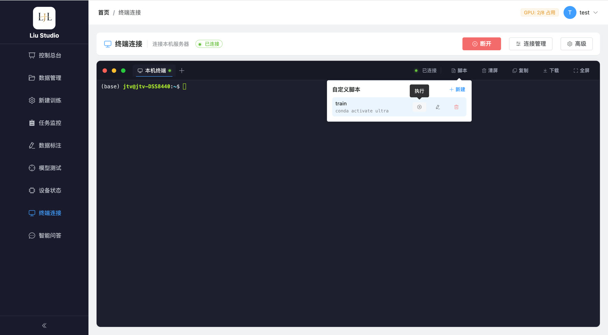
普通聊天、思考、专家和 Agent 模式共用会话空间。操作类问题检索平台手册，故障标准问题检索 TFDS 图文知识库；需要执行时由「乐悠」调用模型、数据、检测与转换工具。
Built for Local Infrastructure
数据集、模型、训练结果与全部 AI 模型服务都保留在本地或内网环境，前后端通过实时通道连接任务与界面。
数据管理以服务器目录为主，训练无需把整包数据集上传到外部服务。
JWT 管理访问会话；首位注册用户成为管理员，终端能力仅向管理员开放。
LLM、Embedding 与 Reranker 均通过本机或内网接口提供能力，数据和检索上下文无需发送到外部模型服务。
Liu Studio
从数据准备到模型交付，把目标检测研发中的重复动作交给平台，把判断留给人。
回到顶部 ↑